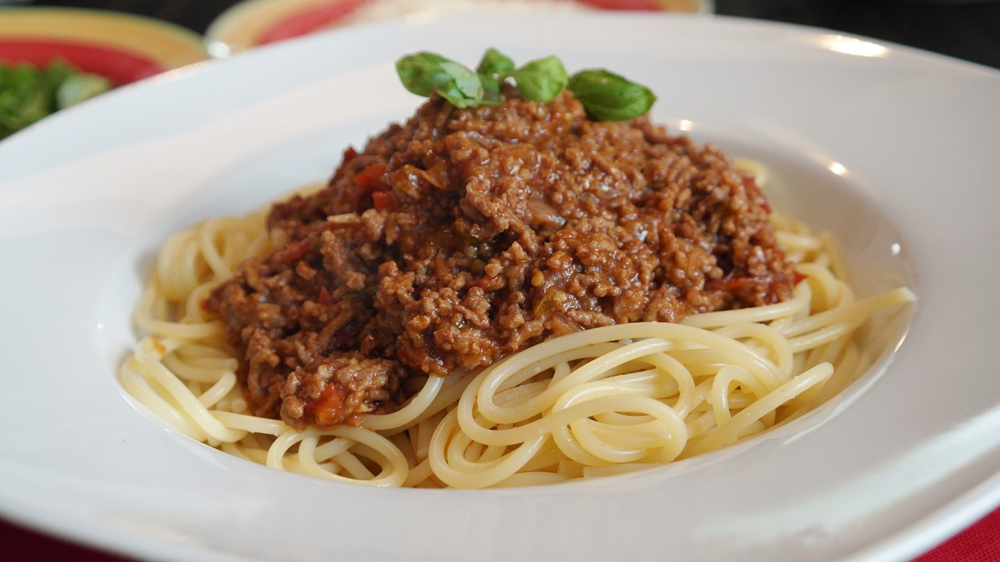
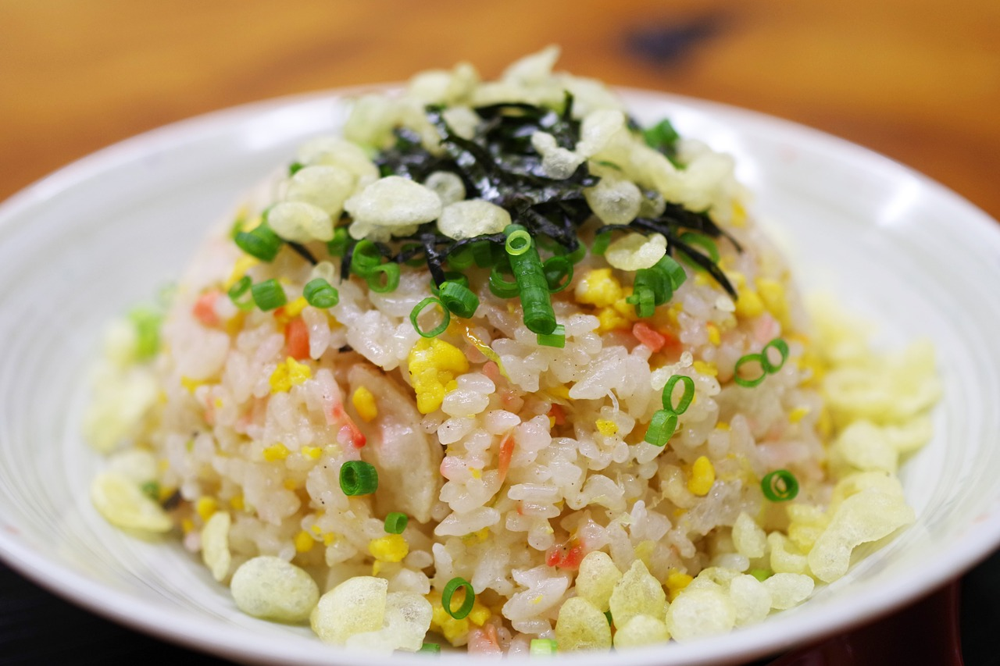
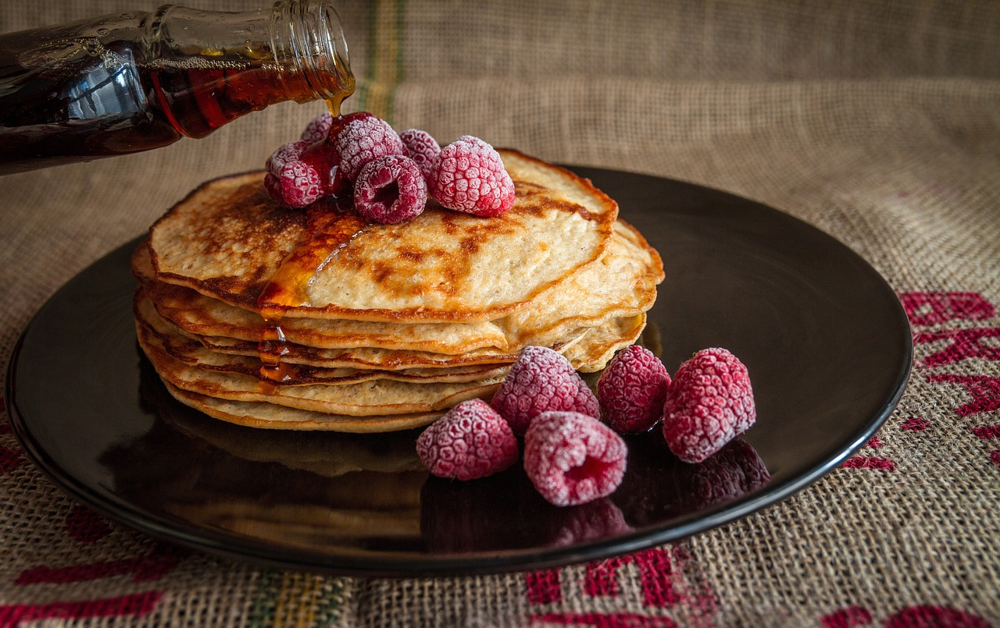

Mince beef
Onion
Garlic
Tomato sauce
Spaghetti
Boil the spaghetti for about 8-10 minutes. In the pan, fried mince garlic and onnion with mince beef. After that, add tomato sauce and season with salt and pepper
Cooked rice
Meat of your choice
Garlic
Spring onnion
Carrot
Eggs
Fried garlic with a little bit of olive oil. Add the meat of your choice, Stir fried the meat until it is cooked. Add carrot and eggs. When the egg is nicely cooked, put the rice and season with oyster sauce, soy sauce, and a little bit sugar. Turn off the heat then add chopped spring onnion.
Flour
Eggs
Sugar
Butter
Milk
Honey
Fruit of your choice
In a large bowl, mix flour, sugar, baking powder and salt. Make a well in the center, and pour in milk, egg and oil. Mix until smooth. Heat a lightly oiled griddle or frying pan over medium high heat. Pour or scoop the batter onto the griddle, using approximately 1/4 cup for each pancake. Brown on both sides and serve hot.
